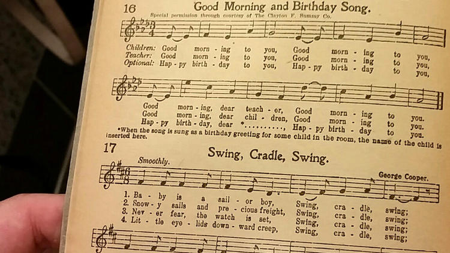

Kisah Pembebasan Lagu "Happy Birthday" Ke Domain Publik

Pada bulan September 2015, hakim George H. King memutuskan bahwa lagu “Happy Birthday” resmi berstatus domain publik. Produk hukum ini lahir oleh karena upaya Jennifer Nelson dan tim pengacaranya yang memperkarakan penarikan biaya sebanyak 1500 Dollar AS terhadap penggunaan lagu “Happy Birthday”. Jennifer bermaksud menggunakan lagu tersebut pada film yang diproduksi bersama timnya di Good Morning To You Productions. Film tersebut dibuat untuk menceritakan sejarah lagu itu sendiri.
Sejarah lagu “Happy Birthday”
Pada tahun 1893, kakak beradik Mildred dan Patty Hill menciptakan lagu berjudul “Good Morning To You” atau Good Morning to All” untuk mereka nyanyikan kepada para murid yang bersekolah di taman kanak-kanak yang mereka kelola. Kedua aktivis pendidikan tersebut memang memiliki latar belakang sebagai ahli pengetahuan musik. Dalam penciptaan lagu ini, Patty (Kepala Sekolah di taman kanak-kanak eksperimental Louisville) bertugas sebagai penulis lirik, dan Mildred (komposer musik) yang menciptakan nada-nadanya. Pada awal abad ke-20 lagu ini mulai banyak dinyanyikan, dengan kata “Happy Birthday” sebagai pengganti kata “Good Morning”. Tidak pernah diketahui siapa yang sebenarnya mulai membuat perubahan kata pada lagu tersebut.
“Happy Birthday” Bebas Hak Cipta
Pembatasan penggunaan lagu yang hampir setiap hari dinyanyikan oleh semua orang (dengan asumsi bahwa setiap hari ada orang yang berulang tahun) oleh Warner Music ini akhirnya mengundang perdebatan. Salah satu argumen terkuat dilontarkan oleh seorang peneliti bernama Robert Brauneis. Pada tahun 2010, Robert menerbitkan hasil penelitiannya yang berjudul “Copyright and the World’s Most Popular Song” (Hak Cipta dan Lagu-Lagu Paling Populer Sedunia). Robert menjabarkan bukti-bukti bahwa lagu ini seharusnya berada di ranah publik sejak dulu. Buku “Everyday Songbook” (1922) menjadi salah satu alat bukti yang digunakan Robert. Pada halaman tempat lagu “Happy Birthday” dan “Good Morning To All” dicantumkan, tidak dicantumkan pula pemberitahuan pemilik hak cipta atas lagu tersebut.
Menurut Copyright Act 1909 Amerika Serikat, ciptaan yang tidak mencantumkan copyright notice (atau logo ini © pada ciptaan), maka karya tersebut dianggap berstatus domain publik. Hal ini berlaku bagi semua karya yang dipublikasi ketika Amerika belum memperbaiki sitem hak ciptanya pada tahun 1977. Fakta ini juga digunakan oleh tim pengacara Jennifer Nelson sebagai alat bukti di perkara yang mereka ajukan. Selain itu, jika kita merujuk pada peristiwa penjualan hak cipta oleh Jessica kepada perusahaan Clayton F. Summy, yang dijual hanyalah “beberapa bagian komposisi piano” lagu “Happy Birthday”. Sehingga, ketika Warner/Chappel Music membeli perusahaan tersebut, Warner/Chappel Music juga hanya mendapatkan bagian yang sama dari lagu “Happy Birthday”. Fakta-fakta ini merupakan sebagian dari banyak fakta yang mendorong hakim King untuk memutuskan bahwa lagu “Happy Birthday” adalah milik publik. Maka telah ditetapkan sejak bulan Juni 2016, ketika putusan pengadilan diumumkan, lagu “Happy Birhday” resmi memasuki domain publik.

Lagu “Selamat Ulang Tahun” Di Indonesia
Indonesia juga memiliki lagu untuk ucapan ulang tahun yang tidak kalah populer dari “Happy Birthday”. Lagu tersebut berjudul “Selamat Ulang Tahun” ciptaan Adikarso. Tembang ini dinyanyikannya bersama Munif Bahasuan, diiringi oleh Orkes Melayu Kelana Ria, dan dapat ditemukan di album musik berjudul “Kabilah”. Irama Records menjadi pihak yang bertanggung jawab untuk menerbitkan serta mendistribusikan album ini.
Selain itu, Adikarso juga menciptakan lagu “Papaja Cha-Cha-Cha”. Lagu tersebut terdapat di dalam album “Papaja Mangga Pisang Djambu” yang menempati peringkat 47 dari “150 Album Indonesia Terbaik” versi majalah Rolling Stone Indonesia. Materi asli dari lagu “Selamat Ulang Tahun” durasinya lebih panjang dari materi yang biasa dinyanyikan di pesta-pesta. Putar video berikut ini untuk mendengarkan materi asli lagu tersebut.
Fakta-Fakta Hukum
Berdasarkan hukum yang berlaku di Indonesia, lagu “Selamat Ulang Tahun” belum habis masa berlaku hak ciptanya. Apabila kita merujuk pada peraturan hak cipta terbaru yakni, Undang-Undang No. 28 Tahun 2014 Tentang Hak Cipta (UUHC 2014), masa berlaku hak cipta untuk karya musik adalah seumur hidup Pencipta dan terus berlangsung selama 70 tahun setelah Pencipta meninggal dunia. Kemudian, apabila hak cipta suatu ciptaan dipegang oleh dua pihak atau lebih, maka hak cipta berlaku selama masa hidup Pencipta yang meninggal dunia paling akhir, dan berlangsung 70 tahun sesudahnya.

Jika hak cipta atas lagu tersebut hanya dipegang oleh Adikarso seorang, maka ketentuan masa berlaku hak cipta yang dirujuk yaitu seumur hidup Pencipta, terus berlangsung selama 70 tahun setelah pencipta meninggal dunia. Pada daftar lagu album “Kabilah”, Adikarso dan Munif Bahasuan disebutkan sebagai pihak yang membawakan lagu “Selamat Ulang Tahun” di rekaman tersebut. Tidak kami temukan pernyataan yang jelas apakah Munif Bahasuan termasuk sebagai pihak pemegang hak cipta bersama Adikarso. Namun, jika memang hak cipta atas lagu tersebut dipegang oleh dua orang, maka masa berlaku hak cipta atas karya tersebut masih berlaku 70 tahun setelah pencipta yang paling terakhir meninggal dunia.
Sumber-sumber:
Happy Birthday song copyright invalid, filmmakers allege - CBC News
Happy Birthday song should be in Public Domain, judge rules - CBC News
Happy Birthday song and it strange past - The Telegraph
Happy Birthday To You - Wikipedia
Peta Letak Rumah Bung Adi Karso - Wikimapia
Tags:
Oleh: Hilman Fathoni
1 Aug 2016Kategori:
Berita Terbaru
- Lokakarya Hak Cipta dan Lisensi Creative Commons di Pekanbaru
- Pengumuman Resmi: Hasil Akhir Training of Trainers Creative Commons Indonesia
- Literatur tentang Model Bisnis Terbuka "Made With CC"
- Data dan Artikel Ilmiah Terbuka dari PLOS!
- Konten Format Model 3 Dimensi Berilsensi CC di Platform Sketchfab